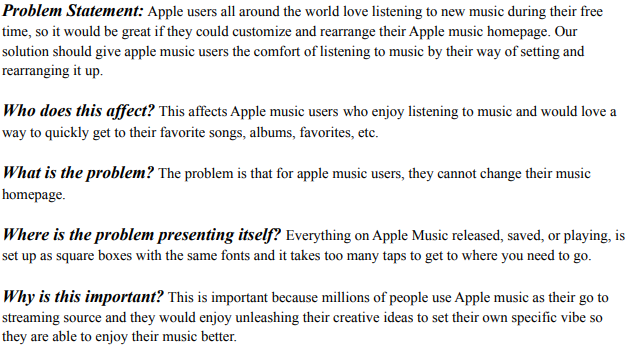

Apple users all around the world love listening to new music during their free time, so it would be great if they could customize and rearrange their Apple music homepage. Our solution should give apple music users the comfort of listening to music by their way of setting and rearranging it up.